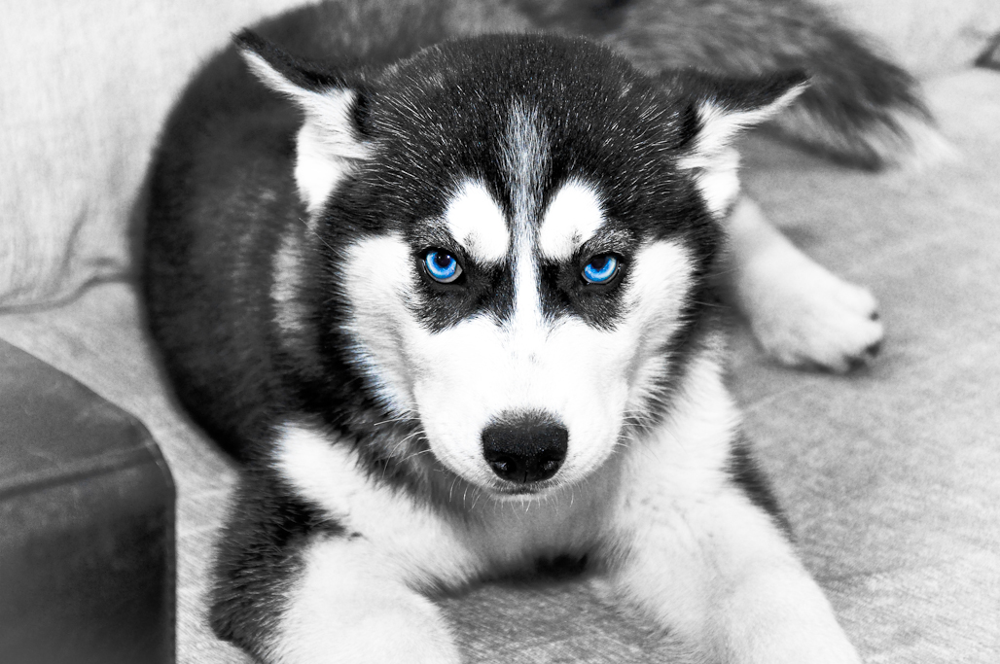

| דף ראשי | גזעים | מחלות | רקעים ותמונות | סקר | צרו קשר |
|---|
| קוקר ספאנייל |
| סמוייד |
| שפיץ יפני |
| פומרניאן |
| פודל |
| דני ענק |
| דלמטי |
| רועה גרמני |
| רועה קווקזי |
| רועה בלגי |
| בולדוג אמריקאי |
| בולדוג צרפתי |
| בולדוג אנגלי |
| צ'או צ'או |
| שיצ'ו |
| אמסטף |
| פינצ'ר |
| רוטווילר |
| דוברמן |
| האסקי סיבירי |
האסקי סיבירי
מידע כללי
האסקי סיבירי הינו כלב עבודה שמוצאו במזרח סיביר. ההאסקי מוכר בזכות פרוותו הכפולה והעבה, אוזניו העומדות והופעתו המכובדת. גזע פעיל ואנרגטי שאבותיו הגיעו מן הקור הקיצוני של סיביר הארקטית. במהלך תקופת הבהלה לזהב, הובא ההאסקי אל אלסקה ומשם הופץ לארצות הברית, קנדה ובהמשך לשאר העולם. הסיבירי, שהתחיל את דרכו ככלב מזחלות, כיום משמש כחיית מחמד חברותית ומשפחתית.
האסקי סיבירי - מקור הגזע והיסטוריה
יליד סיביר שהובא אל אלסקה בשנת 1909, במשך מאות שנים שימשו ההאסקים ככלבי מזחלות, רועי צבאים וכלבי שמירה. הסיבירים היו ועדיין כלבי עבודה מושלמים: מסתגלים לתנאי קור קיצוניים, חיים בקבוצות קטנות ומאוד שמחים יחסית למי שעובד כמעט כל היום. משם הובא ההאסקי לצפון אמריקה שם נסחר בין סוחרי פרוות למארגני מרוצים. ב-1925, פרצה מגפה באלסקה ואת התרופות האיצו בעזרת כלבים אלו, מה שגרם לציבור לשמר ולפתח את הגזע.
האסקי סיבירי - נתונים ומאפיינים
עדין, אוהב לשחק וחכם מאוד, ההאסקי אוהב את משפחתו, נאמן מאוד, חברותי וגור בליבו, מלא אנרגיה, טוב עם ילדים ועם זרים. אינו כלב שמירה כיוון שנובח מעט ואוהב פחות או יותר את כולם. להאסקי פרווה כפולה וחזקה ומבנה גוף בריא מאוד, כיאה לכלב עבודה טוב. האסקי סיבירי מגיע לגובה ממוצע של כ-56 ס"מ (נקבה- 21) ולמשקל ממוצע של כ-24 ק"ג (נקבה- 19).
מחלות נפוצות וטיפול
הסיבירים בריאים לרוב אך עדיין רגישים לבעיות כמו היפ-דיספלסיה (מחלת ירכיים) ובעיות עיניים שונות וגם אלו בעיקר אצל הזכרים. כמו כן, רגישים כלבים אלו לבעיית עור הנפתרת על ידי נתינת תוספת אבץ. בכללי, ניתן ורצוי לבצע בדיקות עיניים וירכיים על בסיס דו- שנתי ולהתייעץ עם וטרינר לפני ואחרי רכישת \ אימוץ כלב. תוחלת החיים של ההאסקי סיבירי נעה בין 12 ל-15 שנים.
